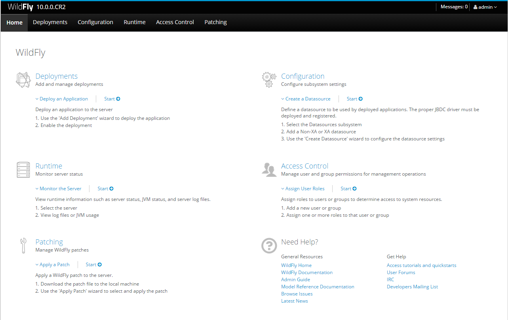

Java EE7
veverka@itexperts.sk
JEE runtime & environment setup
Wildfly AS environment setup
- Required software
- Setup environment variables
- Setup Wildfly standalone configuration
- Create Wildfly AS admin user
- Create users for remote EJB calls
- Create user for remote MDB access
- Add modules for PostgreSQL
- Create data source for PostgreSQL
Environment variable PATH
-
Check if PATH environment variable contains java bin directory.
echo $PATH
echo %PATH%
Environment variable PATH
-
Set PATH environment variable in
JBOSS_HOME/bin/standalone.conf
JBOSS_HOME\bin\standalone.conf.bat
add line on Linux:
PATH=$PATH;/opt/jre/jdk1.8.0_31
add line on Windows:
set PATH=%PATH%;c:\Program Files\Java\jre1.8\bin
Environment variable JAVA_HOME
-
Check if JAVA_HOME environment variable is defined in your system properly.
echo $JAVA_HOME
echo %JAVA_HOME%
Environment variable JAVA_HOME
-
Set JAVA_HOME environment variable in
JBOSS_HOME/bin/standalone.conf
JBOSS_HOME\bin\standalone.conf.bat
add line on Linux:
JAVA_HOME=/opt/jre
add line on Windows:
set JAVA_HOME=c:\Program Files\Java\jre1.8\bin
Setup standalone-full.xml
- Setup Wildfly AS to use
standalone-full.xml profile.
- By default
standalone.xml is used by WildFly AS.
standalone.xml is NOT full JEE7 profile config.standalone-full.xml is full JEE7 profile config.
Setup standalone-full.xml
-
Set profile in
JBOSS_HOME/bin/standalone.conf
JBOSS_HOME\bin\standalone.conf.bat
add line on Linux:
JVM_OPTS="$JVM_OPTS -Djboss.server.default.config=standalone-full.xml"
add line on Windows:
set "JAVA_OPTS=%JAVA_OPTS% -Djboss.server.default.config=standalone-full.xml"
Create Wildfly admin user
-
Start Wildfly AS using scipt
JBOSS_HOME/bin/standalone.sh
JBOSS_HOME\bin\standalone.bat
-
Create user of Management type
./add-user.sh
What type of user do you wish to add?
(a): a
Username : manager
What groups … leave blank for none)[ ]:! leave blank !
Is this new user … or for a Remoting connection for server to server EJB calls. yes/no? No
WildFly Admin Interface

Create users for remote EJB calls
-
Start Wildfly AS using scipt
JBOSS_HOME/bin/standalone.sh
JBOSS_HOME\bin\standalone.bat
-
Create user of Application type
./add-user.sh
What type of user do you wish to add?
(a): b
Username : ejbguest
Password : ejbguest123
What groups … leave blank for none)[ ]: guest
Is this new user … or for a Remoting connection for server to server EJB calls. yes/no? Yes
Create users for remote EJB calls
Add remaining EJB users using previous procedure:
| User Name | Password | Role |
|---|
| ejbuser | ejbuser123 | users |
| ejadmin | ejbadmin123 | admins |
Create users for remote MDB access
-
Start Wildfly AS using scipt
JBOSS_HOME/bin/standalone.sh
JBOSS_HOME\bin\standalone.bat
-
Create user of Application type
./add-user.sh
What type of user do you wish to add?
(a): b
Username : mdbuser
Password : mdbuser123
What groups … leave blank for none)[ ]: guest
Is this new user … or for a Remoting connection for server to server EJB calls. yes/no? yes
Add modules for Postrges SQL
<module name="org.postgres">
<resources>
<resource-root path="postgresql-9.4.1211.jar"/>
</resources>
<dependencies>
<module name="javax.api"/>
<module name="javax.transaction.api"/>
<dependencies>
<module>
Create data source for Postgres
Create data source for Postgres
Create infinispan cache-container
- Create infinispan cache-container
- in standalone-full.xml
<cache-container name="jcacheTest" default-cache="jcacheTestdb"<
<local-cache name="jcacheTestdb"<
<transaction mode="NON_XA"/<
<local-cache<
<cache-container<